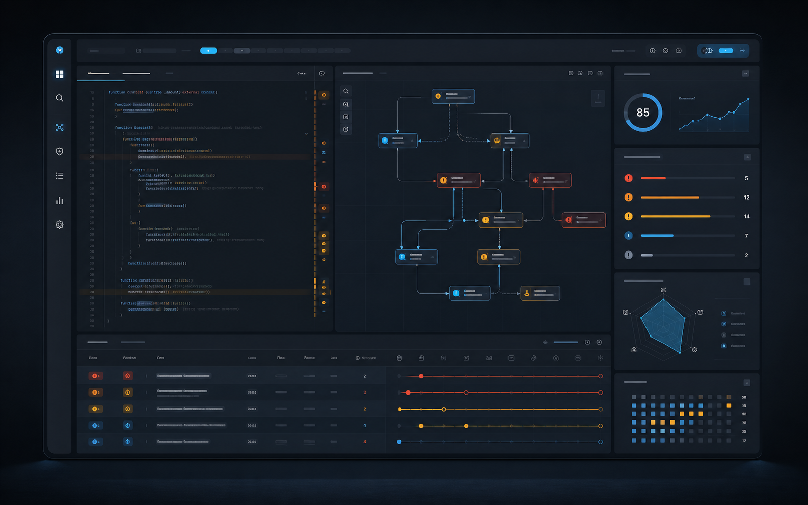
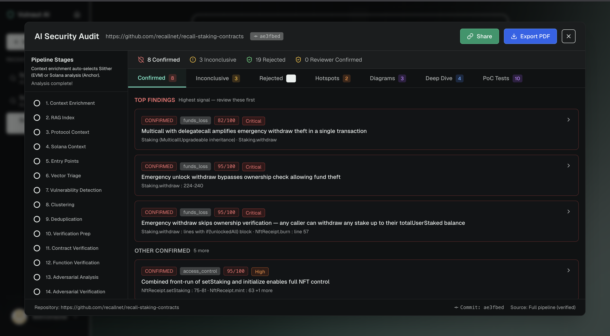

Private model rooms
Dedicated environments for each firm keep methodology, audit reports, and client material isolated throughout tuning, evaluation, and deployment.
Private AI for smart contract security teams
VulnautAI builds isolated AI systems for Web3 auditors: trained on vetted vulnerability knowledge, adapted to your methodology, and deployed where your client data stays under your control.

The tool in practice
VulnautAI presents confirmed findings, inconclusive cases, rejected candidates, diagrams, deep dives, and PoC test work in a reviewer-friendly interface built for security teams.

Built for auditors, not generic chat
The platform is designed around how security firms actually work: private client context, repeatable methodology, explainable finding evidence, and measurable model performance.
Dedicated environments for each firm keep methodology, audit reports, and client material isolated throughout tuning, evaluation, and deployment.
Outputs are structured around exploit path, affected code, impact, assumptions, and remediation notes so auditors can review instead of rewrite.
Model releases are compared against public EVM audit tasks and peer systems so performance claims stay tied to visible measurements.
A practical deployment path
VulnautAI can start as a contained evaluation, then expand into internal tooling once your team trusts the output quality and governance model.
Run representative contracts and historical findings through the foundation model to establish precision, recall, and reviewer effort.
Fine-tune or retrieve against your approved reports, templates, and methodology docs in a dedicated environment.
Deploy through API, internal UI, IDE workflow, or private cloud with access controls, logging, and review gates.
Security posture
Security firms carry client source code, embargoed findings, and proprietary review methods. VulnautAI treats that context as the product boundary.
Client material is scoped to dedicated projects and kept out of shared training flows unless explicitly approved.
Support for private cloud or firm-controlled environments keeps access, logs, and retention aligned with internal policy.
Findings stay traceable to code paths, assumptions, and model outputs so senior auditors can approve with context.
Get started
Send a confidential inquiry or book a short demo to discuss private deployment, benchmark methodology, and integration options.